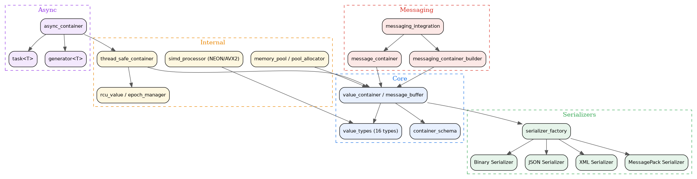

- Generated by
 1.12.0
1.12.0
|
Container System 0.1.0
High-performance C++20 type-safe container framework with SIMD-accelerated serialization
|
Container System is a high-performance, type-safe C++20 container framework with SIMD-accelerated serialization. It provides intuitive abstractions for structured data management, enabling developers to build thread-safe applications with efficient binary, JSON, XML, and MessagePack serialization.
As a Tier 1 library in the kcenon ecosystem, Container System builds on common_system and serves as the data exchange format for network_system, database_system, and pacs_system.
| Category | Feature | Description |
|---|---|---|
| Types | 16 Value Types | null, bool, char, int8–uint64, float, double, string, bytes, container, array |
| Serialization | Multi-Format | Binary, JSON, XML, and MessagePack via strategy pattern |
| Performance | SIMD Acceleration | ARM NEON and x86 AVX2 auto-detected at build time |
| Concurrency | Thread Safety | thread_safe_container with RCU-based lock-free reads |
| Memory | Memory Pool | Custom pool_allocator for small-object allocation |
| Async | Coroutines | C++20 task<T>, generator<T>, async_container |
| Builder | Fluent API | messaging_container_builder with method chaining |
| Type | Code | Description | Size |
|---|---|---|---|
null_value | '0' | Null/empty value | 0 bytes |
bool_value | '1' | Boolean true/false | 1 byte |
char_value | '2' | Single character | 1 byte |
int8_value | '3' | 8-bit signed integer | 1 byte |
uint8_value | '4' | 8-bit unsigned integer | 1 byte |
int16_value | '5' | 16-bit signed integer | 2 bytes |
uint16_value | '6' | 16-bit unsigned integer | 2 bytes |
int32_value | '7' | 32-bit signed integer | 4 bytes |
uint32_value | '8' | 32-bit unsigned integer | 4 bytes |
int64_value | '9' | 64-bit signed integer | 8 bytes |
uint64_value | 'a' | 64-bit unsigned integer | 8 bytes |
float_value | 'b' | 32-bit floating point | 4 bytes |
double_value | 'c' | 64-bit floating point | 8 bytes |
bytes_value | 'd' | Raw byte array | Variable |
container_value | 'e' | Nested container | Variable |
string_value | 'f' | UTF-8 string | Variable |
The framework is organized into layers. Higher layers depend on lower layers, but never the reverse.

A minimal example creating a container, adding values, and serializing:
Builder pattern with method chaining:
| Module | Directory | Key Headers | Description |
|---|---|---|---|
| Core | core/ | value_container.h, value_types.h, value_factory.h | Container foundation, 16 value types, factory utilities |
| Serializers | core/serializers/ | binary_serializer.h, json_serializer.h, xml_serializer.h, msgpack_serializer.h | Multi-format serialization via strategy pattern |
| Internal | internal/ | thread_safe_container.h, simd_processor.h, rcu_value.h, memory_pool.h | Thread safety, SIMD acceleration, RCU reads, memory pooling |
| Async | internal/async/ | task.h, generator.h, async_container.h | C++20 coroutine support for asynchronous container operations |
| Messaging | messaging/ | message_container.h | Domain-specific messaging container |
| Integration | integration/ | messaging_integration.h, messaging_container_builder.h | Builder pattern and messaging system hooks |
| Utilities | utilities/ | string_conversion.h | String conversion and core utility functions |
| Operation | Throughput | Notes |
|---|---|---|
| Container creation | 5M containers/sec | Empty containers |
| Value addition | 15M string values/sec | Single-threaded |
| Binary serialization | 2M containers/sec | 1 KB containers |
| JSON serialization | 800K containers/sec | 1 KB containers |
| SIMD numeric ops | 25M operations/sec | ARM NEON / x86 AVX2 |
| Metric | Size |
|---|---|
| Empty container | ~128 bytes baseline |
| String value | ~64 bytes + string length |
| Numeric value | ~48 bytes per value |
| Binary overhead | ~10% |
| JSON overhead | ~40% |
| Example | Source | Description |
|---|---|---|
| Basic Container | basic_container_example.cpp | Container creation, value management, and serialization |
| Advanced Container | advanced_container_example.cpp | Advanced operations, nested containers, and type conversions |
| Messaging Integration | messaging_integration_example.cpp | Builder pattern and messaging system integration |
| Async Coroutine | async_coroutine_example.cpp | C++20 coroutines with task<T> and generator<T> |
| Iterator | iterator_example.cpp | Range-based iteration over container values |
| ASIO Integration | asio_integration_example.cpp | Boost.Asio network integration patterns |
| Real-World Scenarios | real_world_scenarios.cpp | IoT, finance, gaming, and CMS application patterns |
New to Container System? Start with the tutorials below and keep the FAQ and troubleshooting guide handy as you build.
| Resource | What you will learn |
|---|---|
| Tutorial: Container Basics | Value type selection, builder API, iteration patterns |
| Tutorial: Serialization and SIMD | Binary format internals, SIMD acceleration, cross-platform compatibility |
| Tutorial: Integration Patterns | Wiring Container System into network_system, database_system, and the messaging layer |
| Frequently Asked Questions | Quick answers to the questions external developers ask most often |
| Troubleshooting Guide | Symptoms, causes, and fixes for common issues |
Container System is a Tier 1 data serialization layer in the kcenon ecosystem. It depends on common_system and is consumed by higher-tier systems:
| System | Tier | Relationship | Repository |
|---|---|---|---|
| common_system | 0 | Foundation (Result<T>, IExecutor) | https://github.com/kcenon/common_system |
| thread_system | 1 | Peer (IExecutor, IJob) | https://github.com/kcenon/thread_system |
| logger_system | 2 | Consumer (logging integration) | https://github.com/kcenon/logger_system |
| network_system | 4 | Consumer (data exchange format) | https://github.com/kcenon/network_system |
| database_system | 3 | Consumer (data persistence) | https://github.com/kcenon/database_system |
| pacs_system | 5 | Consumer (full ecosystem) | https://github.com/kcenon/pacs_system |